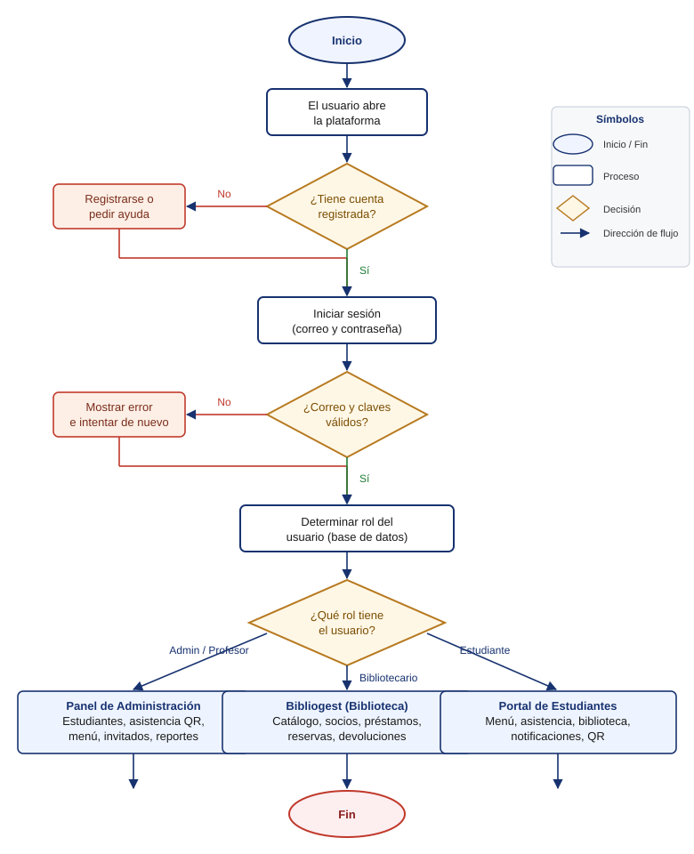
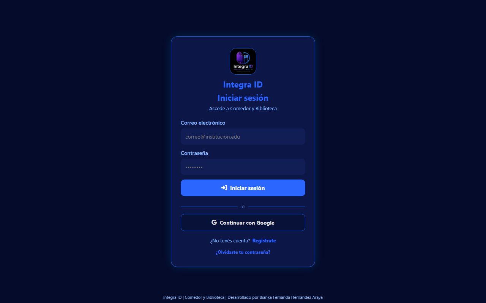
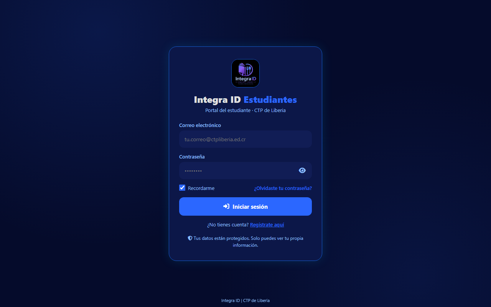
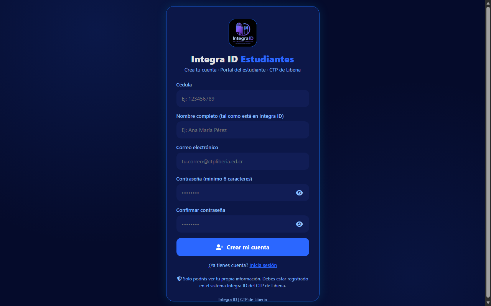

CTP de Liberia, Guanacaste — Costa Rica
| Dato | Valor |
|---|---|
| Nombre del sistema | Integra ID |
| Módulo de comedor | ComeID |
| Módulo de biblioteca | Bibliogest |
| Portal de estudiantes | ComeID Estudiantes |
| Tipo de Proyecto | Desarrollo práctico — Plataforma web |
| Metodología de referencia | RUP — Proceso Racional Unificado |
| Versión del sistema | 1.12.0 |
El control de la asistencia al comedor estudiantil y de los préstamos de una biblioteca escolar son procesos que toda institución educativa debe realizar a diario, y que se vuelven difíciles de controlar cuando el número de estudiantes es grande y no se dispone de mecanismos que agilicen el registro. Este documento presenta el desarrollo de Integra ID, una plataforma web que centraliza la gestión del comedor estudiantil y de la biblioteca del Colegio Técnico Profesional (CTP) de Liberia.
El sistema permite registrar a los estudiantes con sus cuentas de acceso, controlar la asistencia diaria al comedor mediante el escaneo de códigos QR, planificar el menú semanal con ayuda de inteligencia artificial, llevar la lista de invitados externos, digitalizar el catálogo de la biblioteca con préstamos, devoluciones y reservas, y dar al estudiante un portal de auto-servicio donde consulta su menú, su asistencia, sus libros y su credencial QR.
Para controlar el proceso de desarrollo se utilizó como referencia la metodología RUP, dirigida por casos de uso y centrada en los requisitos del proyecto. Para validar los requisitos funcionales y no funcionales se estableció un caso de prueba por cada requisito, y la seguridad se apoya en las reglas de Firestore verificadas del lado del servidor de Firebase y en cabeceras de seguridad web (CSP).
Palabras clave: comedor estudiantil, biblioteca escolar, código QR, asistencia, inteligencia artificial, Firebase, casos de uso.
Abstract: This document presents Integra ID, a web platform that centralizes the management of the student cafeteria and the school library of the CTP de Liberia. It allows registering students, controlling daily cafeteria attendance by QR code scanning, planning the weekly menu with the help of artificial intelligence, and providing students with a self-service portal. The development process follows the RUP methodology, driven by use cases, and security relies on server-side Firestore rules.
El comedor estudiantil y la biblioteca del CTP de Liberia atienden a cientos de estudiantes cada día. Los métodos manuales (listas de papel, hojas de préstamo, planillas de asistencia) generan colas, errores de registro, pérdida de trazabilidad y dificultad para producir reportes. Además, el personal debe repetir la captura de los mismos datos de un estudiante en cada servicio.
Surge entonces la necesidad de una plataforma única que:
El objetivo del trabajo es desarrollar e implementar Integra ID, un sistema web que controle la asistencia estudiantil al comedor mediante escaneo de códigos QR y que gestione la biblioteca escolar, con un portal de auto-servicio para los estudiantes. El sistema fue desarrollado con tecnología Firebase (Auth, Firestore, Hosting) y publica dos aplicaciones web: el panel del personal y el portal de estudiantes.
El presente manual documenta el sistema siguiendo la estructura de un trabajo académico: describe el sistema, especifica los requisitos funcionales y no funcionales, presenta los diagramas de casos de uso, la representación gráfica de procesos (diagrama de flujo con su simbología), la especificación de casos de uso, la trazabilidad de requisitos con sus casos de prueba, la seguridad y las conclusiones.
Capítulo 1: Introducción. Capítulo 2: descripción general del sistema. Capítulo 3: especificación de requisitos funcionales y no funcionales. Capítulo 4: arquitectura y tecnologías. Capítulo 5: vista de casos de uso. Capítulo 6: representación gráfica de procesos (diagrama de flujo). Capítulo 7: especificación de casos de uso. Capítulo 8: trazabilidad de requisitos. Capítulo 9: seguridad del sistema. Capítulo 10: conclusiones y trabajo futuro. Anexos.
Integra ID es un sistema web que reúne, en un solo inicio de sesión y una sola base de datos, todas las herramientas digitales del centro educativo relacionadas con el comedor y la biblioteca. Se compone de tres módulos:
| Módulo | ¿Qué hace? | Usuarios |
|---|---|---|
| ComeID | Gestión del comedor estudiantil | Personal (admin, profesor, bibliotecario) |
| Bibliogest | Gestión de la biblioteca | Personal con rol bibliotecario/admin |
| Portal de Estudiantes | Auto-servicio del estudiante | Estudiantes registrados |
Las tres partes comparten los mismos datos: si el personal registra a un estudiante en el comedor, ese estudiante aparece en la biblioteca y puede entrar a su portal. No hay que cargar datos dos veces. La biblioteca puede funcionar de forma independiente del comedor: un estudiante puede comer en el comedor o no, pero aun así usar la biblioteca.
El sistema permite al personal:
Y al estudiante, desde su portal:
| Usuario | Rol | Descripción | Acceso |
|---|---|---|---|
| Administrador | admin | Dirige el sistema: total de secciones, roles, configuración y eliminaciones | Panel del personal |
| Profesor | profesor | Comedor: estudiantes, asistencia, historial, invitados, menú, exportar | Panel del personal |
| Bibliotecario | bibliotecario | Biblioteca completa + menú e historial | Panel del personal |
| Estudiante | estudiante | Portal personal: menú, asistencia, libros, notificaciones, QR | Portal de Estudiantes |
El rol lo asigna únicamente el administrador desde la sección Gestión de Usuarios y Roles.
| ID | Nombre | Descripción | Prioridad |
|---|---|---|---|
| RF01 | Autenticar y autorizar usuario | El sistema permitirá al personal y al estudiante identificarse con correo y contraseña y acceder solo a las opciones que su rol permite. | Alta |
| RF02 | Gestionar usuario y roles | El sistema permitirá al administrador crear cuentas y asignar roles (admin, profesor, bibliotecario, estudiante), con efecto inmediato. | Alta |
| RF03 | Gestionar estudiante | El sistema permitirá al admin/profesor registrar, consultar, modificar y eliminar estudiantes, con generación automática de su código QR. | Alta |
| RF04 | Importar estudiantes masivamente | El sistema permitirá al admin/profesor importar estudiantes desde CSV/Excel con vista previa, creando registros y cuentas en bloque. | Media |
| RF05 | Registrar asistencia con QR | El sistema permitirá al personal registrar la asistencia diaria del estudiante escaneando su código QR, con confirmación sonora/visual y anti-duplicados. | Alta |
| RF06 | Gestionar invitados externos | El sistema permitirá al admin/profesor registrar invitados que consumen en el comedor, con control de raciones diarias. | Media |
| RF07 | Configurar menú semanal | El sistema permitirá al admin/profesor definir desayuno y almuerzo de lunes a viernes, publicándolo en el portal del estudiante. | Media |
| RF08 | Predicción de demanda (IA) | El sistema analizará el historial de asistencia y proyectará cuántos estudiantes podrían asistir, ayudando a planificar compras. | Media |
| RF09 | Generar credenciales QR | El sistema permitirá al admin/profesor generar credenciales QR imprimibles o compartibles para cada estudiante. | Media |
| RF10 | Consultar historial de asistencia | El sistema permitirá consultar el historial diario y por estudiante, con estadísticas, y exportarlo. | Media |
| RF11 | Gestionar catálogo de libros | El sistema permitirá al bibliotecario/admin agregar, editar, eliminar, buscar e importar libros, con disponibilidad por ejemplar en tiempo real. | Alta |
| RF12 | Gestionar socios de biblioteca | El sistema permitirá dar de alta socios e importarlos desde Excel/CSV (clave: cédula). | Media |
| RF13 | Registrar préstamos y devoluciones | El sistema permitirá prestar y devolver libros (con QR opcional), calculando la fecha de vencimiento y actualizando la disponibilidad. | Alta |
| RF14 | Gestionar reservas | El sistema permitirá reservar un libro prestado o agotado y atender las reservas por orden al devolverse. | Media |
| RF15 | Alertas de préstamos | El sistema mostrará préstamos vencidos y por vencer. | Media |
| RF16 | Enviar notificaciones | El sistema permitirá a los gestores enviar avisos a los estudiantes. | Media |
| RF17 | Exportar reportes | El sistema permitirá exportar estudiantes, asistencias y biblioteca a Excel y PDF. | Media |
| RF18 | Registrarse en el portal (estudiante) | El sistema permitirá al estudiante registrarse validando su cédula y nombre contra el padrón del colegio y exigir correo institucional. | Alta |
| RF19 | Consultar menú y asistencia personal | El portal mostrará al estudiante el menú de la semana y sus consumos (resumen y detalle). | Alta |
| RF20 | Consultar disponibilidad y biblioteca personal | El portal mostrará el catálogo disponible (etiqueta "Disponible (n)") y los préstamos, reservas e historial del estudiante. | Media |
| RF21 | Gestionar configuración y auditoría | El sistema permitirá al admin ajustar idioma, datos del comedor/biblioteca y la clave de IA, y consultar el historial de actividades. | Media |
| ID | Nombre | Descripción | Prioridad |
|---|---|---|---|
| RNF01 | Espacio y rendimiento | La aplicación se publica en Firebase Hosting (plan gratuito). Se espera un tiempo de respuesta de pocos segundos al cargar datos y un escaneo QR casi inmediato (menos de 2 segundos). | Alta |
| RNF02 | Usabilidad | Interfaz responsive que funciona en computadora, tableta y teléfono. Se recomienda Google Chrome, Microsoft Edge o Firefox actualizados. | Alta |
| RNF03 | Seguridad | Autenticación con correo y contraseña de Firebase Auth; control de acceso por rol en las reglas de Firestore del lado del servidor; cabeceras CSP; sin secretos en el código fuente. | Alta |
| RNF04 | Portabilidad | Sistema web multiplataforma (iniciado con cualquier navegador moderno), con interfaz en español, inglés, portugués, francés y alemán. | Media |
| RNF05 | Operacional | La base de datos (Firestore) respalda y replica los datos automáticamente; el sistema no requiere servidores propios ni administración de infraestructura. | Media |
La plataforma está desarrollada con Firebase (de Google):
| Componente | Uso |
|---|---|
| Firebase Auth | Inicio de sesión con correo y contraseña |
| Cloud Firestore | Base de datos NoSQL con reglas de seguridad por rol |
| Firebase Hosting | Publicación de las dos aplicaciones web |
| Firebase Functions | Funciones de servidor (respaldo, importación, IA, correos) |
| Google Gemini (IA) | Asistencia para menús y predicción de demanda |
| Firebase Storage | Almacenamiento (actualmente cerrado por seguridad) |
Las dos aplicaciones son frontend: toda la lógica se ejecuta en el navegador y el acceso a los datos está protegido por las reglas de seguridad de Firestore. Esto significa que nadie puede leer ni modificar información a la que no tenga permiso, aunque lo intente directamente contra la base de datos. Las funciones de servidor (Cloud Functions) complementan el sistema para tareas de respaldo, importación masiva, generación de reportes, envío de correos y análisis con IA.
Ambas aplicaciones comparten la misma base de datos: lo que registra el panel se ve en el portal y viceversa.
| Aplicación | URL | Usuarios |
|---|---|---|
| Panel de Administración | https://comeid-670b9.web.app | Administradores, profesores, bibliotecarios |
| Portal de Estudiantes | https://comeid-estudiantes.web.app | Estudiantes registrados |
El sistema fue desarrollado íntegramente con tecnologías web estándar y scripts de servidor de apoyo:
| Lenguaje | Uso en el sistema | Dónde se usa |
|---|---|---|
| HTML5 | Estructura de las páginas web (interfaces del panel y del portal) | Comeid.app/.html y ComeidEstudiantes/.html |
| CSS3 | Estilos, diseño responsive, temas claro/oscuro y animaciones | Archivos de estilo de ambas aplicaciones |
| JavaScript (ECMAScript) | Lógica del sistema: autenticación, base de datos, escaneo QR, exportación, IA | Comeid.app/js/.js y ComeidEstudiantes/js/.js |
| Node.js | Backend de Cloud Functions (análisis con Gemini, correos, reportes) | Comeid.app/functions/ |
| Python 3 | Herramientas de administración local: respaldo, restauración, importación de libros y predicción | Comeid.app/python/comeid.py y Comeid.app/functions-python/ |
| Reglas de Firestore (lenguaje de reglas de seguridad) | Control de acceso por rol en la base de datos | Comeid.app/firestore.rules |
| JSON | Configuración del proyecto, manifiestos PWA y archivos de datos | firebase.json, manifest.json, etc. |
| Bash / PowerShell | Despliegue y automatización local (Firebase CLI) | Scripts de despliegue del desarrollador |
| Librería | Versión | Uso |
|---|---|---|
| Firebase JS SDK | 8.10.0 | Autenticación, Firestore, Functions, Storage |
| Font Awesome | 6.5.1 | Íconos de la interfaz |
| qrcode-generator | 1.4.4 | Generación de códigos QR de estudiantes y ejemplares |
| SheetJS (xlsx) | 0.18.5 | Exportación e importación de archivos Excel |
| Google Generative AI | 0.21.0 | Integración de la IA (Gemini) en las funciones |
| Firebase Admin | 12.1.0 | Funciones de servidor con privilegios de administrador |
| Nodemailer | 10.0.9 | Envío de correos desde las funciones (avisos de biblioteca) |
| Service Worker (PWA) | — | Caché local y funcionamiento sin conexión parcial |
ComeDIDexpo/
├── Comeid.app/ → Panel de administración (perfil admin/profesor/bibliotecario)
│ ├── js/ → Lógica JavaScript del panel
│ ├── python/ → Herramientas Python de administración local (respaldo, importación)
│ ├── functions/ → Cloud Functions en Node.js (IA Gemini, correos, reportes)
│ ├── functions-python/ → Cloud Functions en Python
│ ├── firestore.rules → Reglas de seguridad de la base de datos
│ └── *.html → Páginas del panel (index, login, selector, biblioteca)
├── ComeidEstudiantes/ → Portal de estudiantes
│ ├── js/ → Lógica JavaScript del portal
│ └── *.html → Páginas del portal (dashboard, comedor, biblioteca, QR, ...)
├── diagrama_flujo_general.svg → Diagrama de flujo del sistema
└── MANUAL_UNICO.* → Este manual (md, html, pdf, docx)
El sistema se organiza alrededor de los casos de uso que se especifican en el capítulo 7. La vista general es la siguiente:
| Actor | Casos de uso principales |
|---|---|
| Admin | CU-01 a CU-16 (panel) y CU-17 (configuración) |
| Profesor | CU-01 a CU-11 y CU-16 (sin roles ni configuración) |
| Bibliotecario | CU-01, CU-11 a CU-16 (biblioteca + menú e historial) |
| Estudiante | CU-E01 a CU-E09 (portal) |
Los casos de uso del panel de administración (capítulo 7.1) cubren la gestión de estudiantes, asistencia QR, invitados, menú, IA, biblioteca y exportación. Los casos de uso del portal de estudiantes (capítulo 7.2) cubren el registro, el menú, la asistencia, la biblioteca, el QR y las notificaciones.
A continuación se presenta el diagrama de flujo de los procesos generales del sistema, junto con la tabla de simbología utilizada, siguiendo la notación estándar de diagrama de flujo (ANSI).
| Símbolo | Descripción |
|---|---|
| Óvalo | Inicio/Final. Determina el inicio o el fin de una operación. |
| Rectángulo | Proceso. Se utiliza para procesos o acciones a ejecutar. |
| Rombo | Decisión. Indica una decisión sobre una actividad o proceso (avanza por el flujo Sí o No). |
| Flecha | Dirección de flujo. Muestra hacia dónde va el flujo del proceso. |

El diagrama indica que el usuario debe iniciar sesión (óvalo de inicio) en el sistema con sus credenciales. Si el correo y la contraseña son válidos (rombo de decisión), el sistema identifica el rol del usuario y le muestra las opciones que le corresponden:
El acceso a las opciones está definido por los roles mencionados. Las decisiones con respuesta negativa (cuenta no registrada, credenciales inválidas) regresan al paso anterior para corregir el dato. El proceso termina cuando el usuario cierra la sesión (óvalo de fin).
A continuación se especifican los casos de uso del Panel de Administración y del Portal de Estudiantes. Cada caso de uso indica actor(es), precondiciones, flujo principal, variaciones/errores y resultado esperado.
https://comeid-670b9.web.app.usuarios y deja listo al estudiante para escanear.https://comeid-estudiantes.web.app y pulse Regístrate aquí.@ctpliberia.ed.cr), contraseña, cédula y nombre completo.Para cada requisito funcional (RF) y no funcional (RNF) se definió un caso de prueba. La siguiente tabla resume la trazabilidad; los pasos detallados de cada prueba se ejecutan directamente en las dos aplicaciones publicadas.
| Caso de prueba | Pasos resumidos | Resultado esperado | Cumple |
|---|---|---|---|
| RF01 Autenticar | Abrir el panel, escribir correo/contraseña válidos, pulsar Iniciar sesión | Entra al panel con las secciones de su rol | Sí |
| RF02 Usuarios y roles | En Gestión de Usuarios, cambiar el rol de una cuenta y guardar | El nuevo rol aplica de inmediato al recargar | Sí |
| RF03 Gestionar estudiante | Registrar estudiante con datos y foto | Aparece en el listado con su QR generado | Sí |
| RF04 Importar estudiantes | Cargar CSV con 3 estudiantes válidos y 1 inválido | Se crean 3; el inválido se lista para corregir | Sí |
| RF05 Asistencia con QR | Escanear el QR de un estudiante dos veces el mismo día | 1.ª vez: asistencia registrada y confirmación sonora; 2.ª vez: aviso "Ya registrado hoy" | Sí |
| RF06 Invitados | Registrar un invitado y marcarlo al asistir | Aparece en la lista del día con sus raciones | Sí |
| RF07 Menú semanal | Guardar desayunos y almuerzos de la semana | El portal muestra lo guardado por día | Sí |
| RF08 Predicción IA | Consultar Predicción con historial de 28 días | Se muestra proyección de asistencia y raciones | Sí |
| RF09 Credenciales QR | Generar el QR de un grupo | Se descargan credenciales imprimibles | Sí |
| RF10 Historial | Consultar historial por estudiante en un rango | Estadísticas y detalle diario del estudiante | Sí |
| RF11 Catálogo libros | Agregar e importar libros; prestar 1 ejemplar | La disponibilidad disminuye al prestar y aumenta al devolver | Sí |
| RF12 Socios | Importar socios con cédula repetida | El repetido se marca ACTUALIZAR, los nuevos NUEVO | Sí |
| RF13 Préstamos/devoluciones | Prestar y devolver con y sin QR | Fecha de vencimiento automática; disponibilidad recalculada | Sí |
| RF14 Reservas | Reservar un libro agotado y devolverlo | La reserva se atiende por orden al devolverse | Sí |
| RF15 Alertas | Revisar préstamos vencidos | Se listan los préstamos vencidos y por vencer | Sí |
| RF16 Notificaciones | Crear y enviar un aviso | Todos/los destinatarios lo ven en su portal | Sí |
| RF17 Exportar | Exportar asistencia del día a Excel y PDF | Se descargan ambos archivos con datos | Sí |
| RF18 Registro portal | Registrarse con cédula y nombre válidos | Cuenta vinculada y acceso al portal | Sí |
| RF19 Menú/asistencia personal | Consultar Comedor en el portal | Se ve el menú semanal y los consumos propios | Sí |
| RF20 Disponibilidad/biblioteca personal | Consultar catálogo y préstamos en el portal | Se ve Disponible (n) y solo los propios préstamos | Sí |
| RF21 Configuración/auditoría | Cambiar idioma y consultar Actividad | Interface cambia de idioma; eventos listados | Sí |
| Caso de prueba | Pasos resumidos | Resultado esperado | Cumple |
|---|---|---|---|
| RNF01 Rendimiento | Cronometrar carga del panel y escaneo QR | Carga en pocos segundos; escaneo casi inmediato | Sí |
| RNF02 Usabilidad | Abrir en computadora, tableta y teléfono | La interfaz se adapta (responsive) | Sí |
| RNF03 Seguridad | Intentar leer datos de otro estudiante desde la consola | Firestore lo rechaza (reglas por rol) | Sí |
| RNF04 Portabilidad | Iniciar en Chrome, Edge y Firefox; cambiar idioma | Funciona igual en las tres y en los 5 idiomas | Sí |
| RNF05 Operacional | Consultar datos sin administrar servidores | Los datos están disponibles desde Firebase | Sí |
Todas las operaciones de lectura y escritura están protegidas por reglas del lado del servidor de Firebase. Aunque alguien robara el código o conectara su propio cliente, no podría leer ni modificar datos sin cumplir las reglas:
uid y su cédula.uid y correo, con correo verificado.deny).Ambas aplicaciones envían cabeceras Content-Security-Policy que restringen qué recursos puede cargar el navegador:
gstatic.com) y de la librería de íconos (Font Awesome vía cdnjs).eval prohibido).frame-ancestors 'self') y sin objetos embebidos (object-src 'none').También se envían: X-Content-Type-Options: nosniff, X-Frame-Options: SAMEORIGIN, Referrer-Policy y Permissions-Policy.
.gitignore que excluye archivos de credenciales.'unsafe-inline' en scripts por pequeños bloques internos de las páginas.El sistema Integra ID cumple el objetivo del trabajo: ofrecer al CTP de Liberia una plataforma única para gestionar el comedor estudiantil y la biblioteca. Se logró:
La metodología de referencia (RUP, dirigida por casos de uso) permitió estructurar la documentación de manera que cada requisito del sistema puede validarse con un caso de prueba, cumpliendo así la trazabilidad de requisitos solicitada.
'unsafe-inline'.| Dato | Valor |
|---|---|
| Nombre comercial | Integra ID |
| Módulo de comedor | ComeID |
| Módulo de biblioteca | Bibliogest |
| Portal de estudiantes | ComeID Estudiantes |
| Tecnología | Firebase (Auth, Firestore, Hosting) + Google Gemini (IA) |
| Panel del personal | https://comeid-670b9.web.app |
| Portal de estudiantes | https://comeid-estudiantes.web.app |
| Idiomas | Español, inglés, portugués, francés, alemán |
| Menú del comedor | Lunes a viernes |
| Repositorio | GitHub — IntegraID-droid/ComeID |
Panel de Administración
| Recurso | URL |
|---|---|
| Login | https://comeid-670b9.web.app/login.html |
| Panel principal | https://comeid-670b9.web.app/index.html |
| Selector de apps | https://comeid-670b9.web.app/selector.html |
| Biblioteca | https://comeid-670b9.web.app/biblioteca.html |
Portal de Estudiantes
| Recurso | URL |
|---|---|
| Registro | https://comeid-estudiantes.web.app/registro.html |
| Login | https://comeid-estudiantes.web.app/index.html |
| Dashboard | https://comeid-estudiantes.web.app/dashboard.html |
| Comedor | https://comeid-estudiantes.web.app/comedor.html |
| Biblioteca | https://comeid-estudiantes.web.app/biblioteca.html |
| QR personal | https://comeid-estudiantes.web.app/qr.html |
| Notificaciones | https://comeid-estudiantes.web.app/notificaciones.html |
| Perfil | https://comeid-estudiantes.web.app/perfil.html |
| Configuración | https://comeid-estudiantes.web.app/configuracion.html |
¿Un profesor puede eliminar estudiantes? No. Eliminar estudiantes es exclusivo del administrador.
¿Puede el profesor gestionar la biblioteca? Sí, si tiene rol de bibliotecario o admin la gestiona; los profesores con esos roles también. Los demás profesores solo ven el catálogo en solo lectura.
¿Qué pasa si un estudiante olvida su QR? Puede marcarse manualmente según la configuración, o volver a generar su QR desde la sección Generar QR.
¿El menú incluye sábados y domingos? No. El menú se gestiona de lunes a viernes.
¿Puedo cambiar mi propio rol? Solo el administrador gestiona roles.
¿Un estudiante puede ver la información de otro? No; el portal solo muestra su propia información, y Firestore lo rechaza aunque se intente.
¿Qué hago si no encuentro mi nombre al registrarme? Pida al personal que verifique que su cédula y nombre están registrados en el padrón del comedor.
¿Puedo usar mi QR sin internet? Sí, guarde una captura de pantalla del QR y preséntela con brillo alto.
¿Cómo sé si un libro está disponible? En Mi biblioteca abra el catálogo y mire la etiqueta Disponible (n): si está agotado, no hay ejemplares libres en ese momento.
| Término | Significado |
|---|---|
| Admin | Administrador del sistema, con todos los permisos. |
| Bibliotecario | Rol del personal que gestiona la biblioteca. |
| Becado / Pagado | Tipo de estudiante: con beca (sin cobro) o de pago. |
| Disponible (n) | Etiqueta del portal que indica los n ejemplares libres de un libro. |
| Firestore | Base de datos NoSQL de Firebase, con reglas de seguridad. |
| Gestor | Admin, profesor o bibliotecario registrado en el panel. |
| IA / Gemini | Inteligencia artificial de Google usada para menús y predicciones. |
| Padrón | Registro oficial de estudiantes del comedor del CTP. |
| QR | Código de respuesta rápida usado como credencial del estudiante. |
| RUP | Proceso Racional Unificado, metodología de referencia del proyecto. |
| Socio | Estudiante con derecho a usar la biblioteca. |
| CSP | Content-Security-Policy, cabecera de seguridad web. |
| CDN | Red de distribución de contenido que sirve las librerías (Font Awesome, Firebase). |
| PWA | Aplicación web progresiva; permite caché local y uso parcial sin conexión. |
Las capturas siguientes fueron tomadas de la versión publicada (sitio real) en modo oscuro.

Figura A.1 — Pantalla de inicio de sesión del panel de administración (comeid-670b9.web.app).

Figura A.2 — Pantalla de inicio de sesión del portal de estudiantes (comeid-estudiantes.web.app).

Figura A.3 — Pantalla de registro de estudiantes con confirmación de datos.
Las funciones internas del panel (comedor, biblioteca, asistencia) requieren una sesión activa; por ello este anexo documenta las pantallas públicas accesibles sin credenciales.
© 2026 Integra ID. Todos los derechos reservados.
Esta obra (software, código fuente, diseño, diagramas y documentación) fue desarrollada como proyecto estudiantil del Colegio Técnico Profesional (CTP) de Liberia, Costa Rica.
| Área | Medio |
|---|---|
| Institución | Colegio Técnico Profesional de Liberia, Guanacaste, Costa Rica |
| Proyecto | Integra ID (ComeID, Bibliogest, Portal de Estudiantes) |
| Repositorio | GitHub — IntegraID-droid/ComeID |
Documento elaborado como manual de uso, documentación técnica y presentación del proyecto Integra ID (ComeID, Bibliogest y Portal de Estudiantes) — CTP de Liberia, Costa Rica.
© 2026 Integra ID — Colegio Técnico Profesional de Liberia. Todos los derechos reservados.